Následující den se dosud příznivé počasí trochu pokazilo a už ráno se dalo do deště. Nám to ale nevadilo. Seděli jsme si v “naší” pekárničce, před sebou voňavou kávu a jablečnou kapsu, a kapky deště za oknem byly jen příjemnou kulisou tohoto ospalého rána. Než jsme dosnídali, mraky na obloze se zase na nějakou chvíli umoudřily a my se tak dostali k metru suchou nohou.
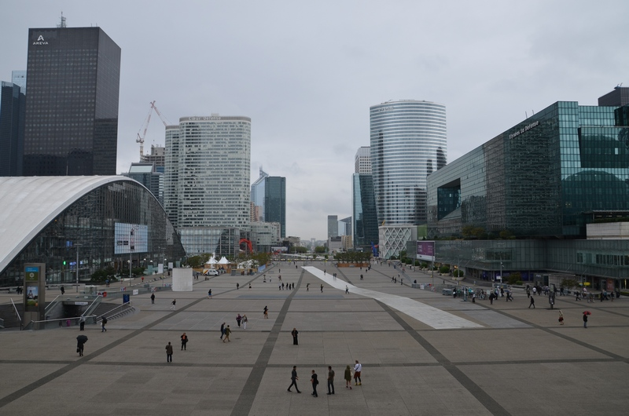
La Défense
Pro tento den jsme měli v plánu navštívit moderní “mrakodrapovou” čtvrť La Défense. Nasedli jsme tedy na linku 1 a jeli až na konečnou. Měli jsme docela problém se z této zastávky vymotat, protože to tam bylo strašně veliké, chaotické a neoznačené. Nakonec jsme zabloudili do asi největšího nákupního centra, jaké jsem kdy viděla :D, a po této zacházce se nakonec nečekaně zjevili přímo pod Grande Arche. Mně osobně se La Défense asi víc líbilo z dálky, ale je pravda, že za lepšího počasí bych to třeba hodnotila jinak. Takhle v dešti jsme toho v této čtvrti moc dělat nemohli. Chvíli jsme se procházeli pod Grande Arche a fotili, ale nakonec jsme usoudili, že bude lepší vymyslet si program někde v suchu. Vydali jsme se tedy zpátky do nákupního centra, prošli si pár obchodů a skončili v Monoprixu, kde jsme si koupili bagetu k obědu :-). Pak jsme ještě zavítali do jednoho úžasného obchůdku s domácí dekorací (tuším, že se jmenoval Maison du Monde) a chvíli se tam rozplývali nad krásnýma lampičkama a dalšíma doplňkama do bytu :-).
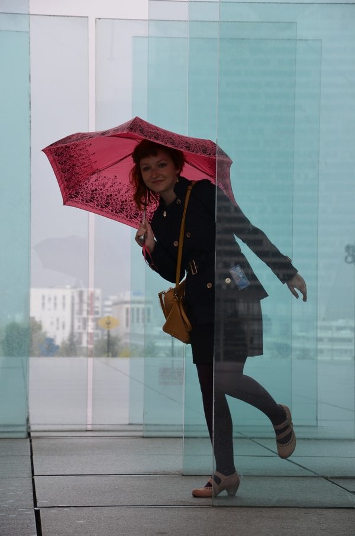
Prší prší…
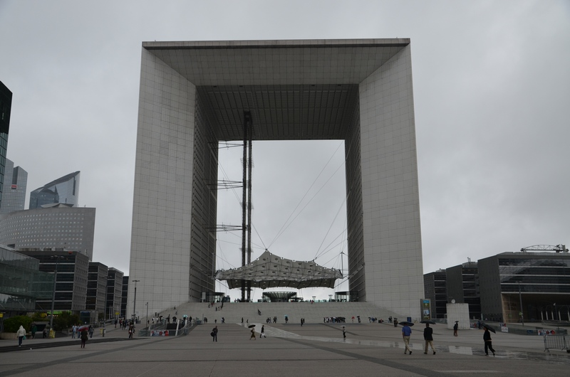
Grande Arche
Usoudili jsme, že dnešní počasí je jako stvořené pro návštěvu Pantheonu, který jsme zatím stihli omrknout pouze zvenčí při naší první procházce Paříží. Naše další kroky tedy vedly na místo posledního odpočinku řady slavných francouzských velikánů. Protože v Pantheonu tou dobou právě probíhala výstava o Jeanu Jacquesovi Rousseau, zavítali jsme i na ni.
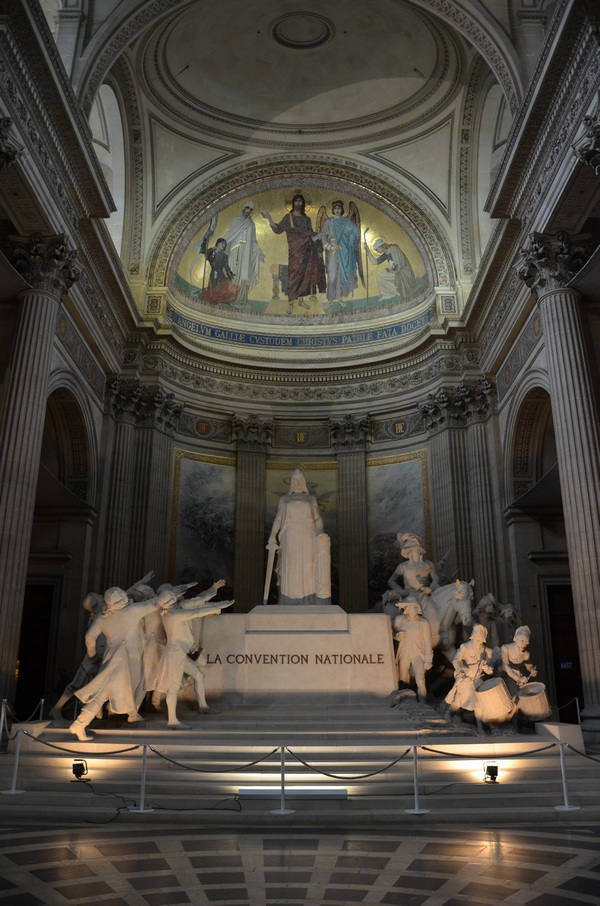
V Pantheonu
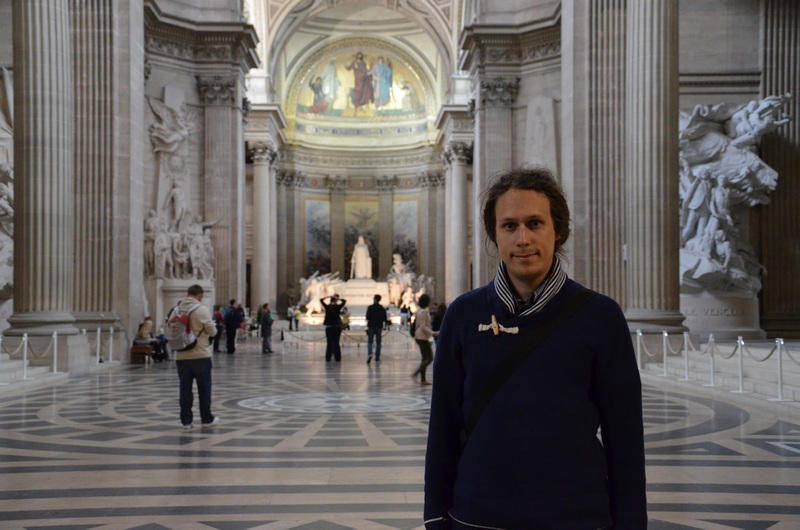
Péťa a Pantheon
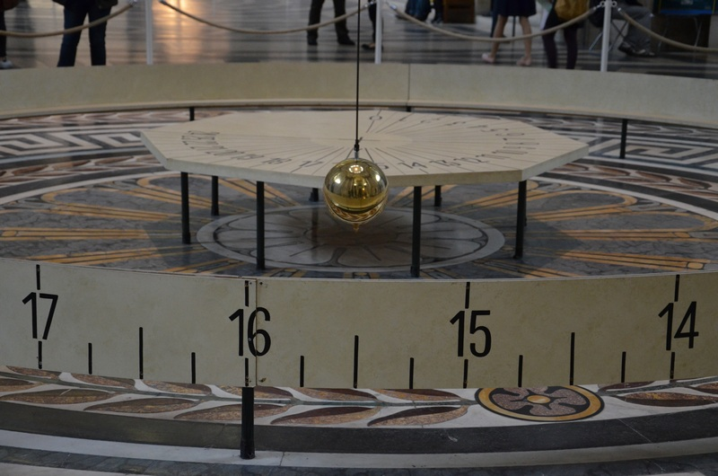
Foucaultovo kyvadlo
Zatímco Péťa byl fascinován Foucaultovým kyvadlem, já už se nemohla dočkat, až se půjdeme podívat dolů do hrobky 8-)… Musím ale říct, že v tomto směru mě Pantheon trochu zklamal - krypta je chladná a ponurá a všechny hrobky jsou v podstatě stejné. No, asi jsem čekala u hrobů Voltaira, Victora Huga nebo Émila Zoly něco honosnějšího 8-)…
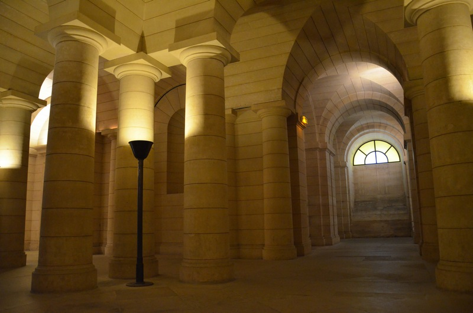
Krypta
Tak či tak jsme v Pantehonu strávili spoustu času a když jsme konečně vyšli zpátky ven na denní světlo, bylo po dešti. Z toho jsme měli velkou radost, protože naše další plány už se opět měly odehrávat pod širým nebem - čekala nás ještě cesta k Bastile a na Vogézské náměstí. Obojí se nachází nedaleko od Pantheonu a bez problémů jsme se zvládli přemístit pěšky. Bastila mě opět nijak nenadchnula - jednak proto, že ona gigantická pevnost, ve své době jedna z největších v Evropě, která později sloužila jako vězení, už je dávno ta tam. Na jejím místě dnes stojí budova opery. Nenajdete tu ani žádný památník, který by připomínal události roku 1789. Sloup se sochou Svobody nepřipomíná dobytí Bastily, ale červencovou revoluci z roku 1830, která vynesla na francouzský trůn orleánského vévodu Ludvíka Filipa. Dnešní náměstí Bastily zkrátka není ničím zajímavé a ani my jsme se tam proto dlouho nezdrželi.
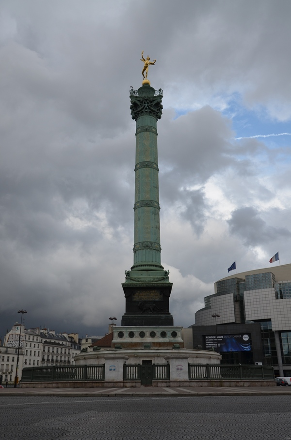
Náměstí Bastily
To náměstí Place des Vosges, kam jsme zamířili hned vzápětí, je považováno za jedno z vůbec nejkrásnějších v Paříži! Když se před námi objevilo, museli jsme s autorem tohoto výroku vduchu souhlasit. Toto místo je neprávem turistickými průvodci poněkud opomíjené, ale když se před vámi náhle vyloupne, ocitnete se rázem jakoby v jiném světě. Možná i díky tomu, že je na první pohled dobře ukryto a nedoléhá sem ruch z hlavní ulice svatého Antonína, možná také proto, že jsme sem zavítali až navečer a náměstí bylo liduprázdné, dýchla na nás atmosféra staré Paříže.
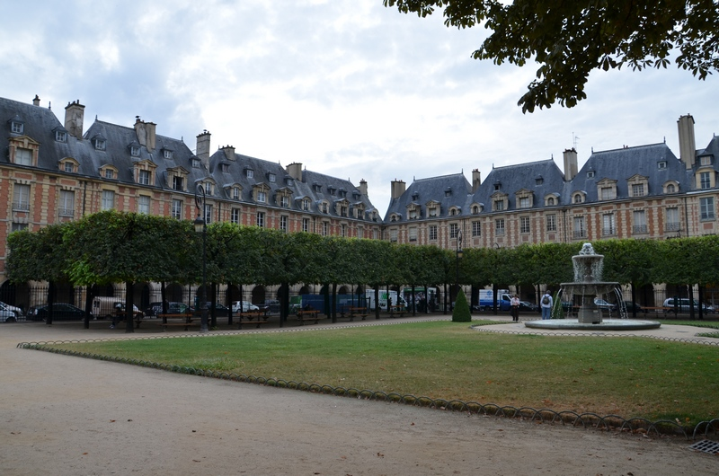
Place des Vosges
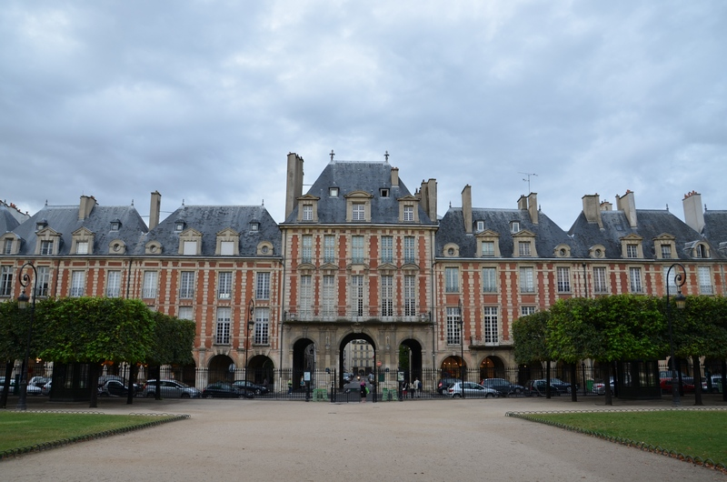
Jedno z nejkrásnějších pařížských náměstí
Place des Vosges (za celou dovolenou jsme zanic na světě nepřišli na to, jak se to vlastně vyslovuje :D) zdobí krásný park s fontánami, milovníci literatury se v něm však dlouho nezdrží a běží hledat dům číslo 6, kde strávil 15 let svého života spisovatel Victor Hugo. Dnes v tomto domě najdete Hugovo muzeum.
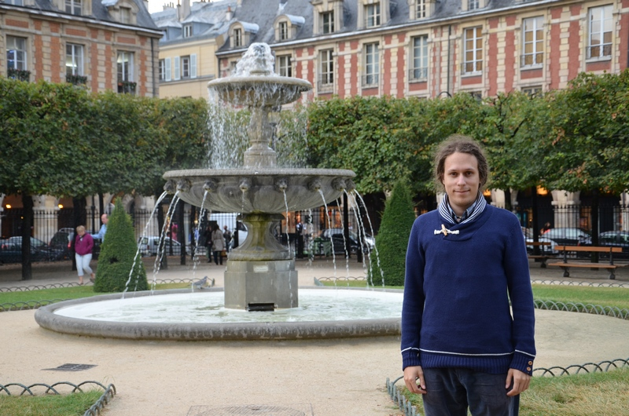
V parku
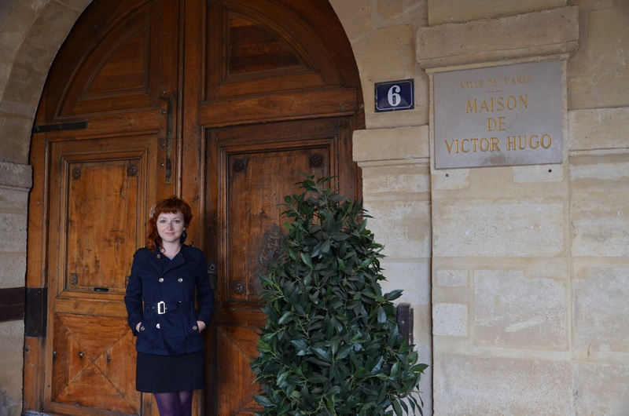
Dům Victora Huga
Z Vogézského náměstí nás nakonec vyhnala zima, takže jsme zvolili již tradiční program - nákup v Monoprixu a večerní siestu se sýrem a lahví vína :-). Čekala nás také poslední noc ve Formuli a na druhý den stěhování do Montmartru, na který už jsme se strašně těšili.
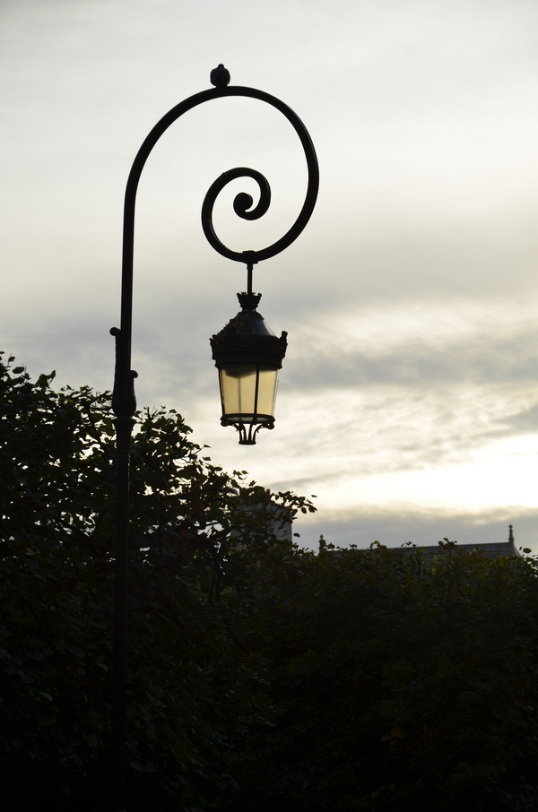
Podvečer
Jááá tam chcííí. Place des Vosges jsem viděla jen večer a ten parčík byl zavřenej. A když je tam člověk jen 4 dny a chce toho tolik vidět, tak není čas se někam vracet. :-( A Défense jsem taky viděla jen z dálky z Vítěznýho oblouku a Eiffelovky.